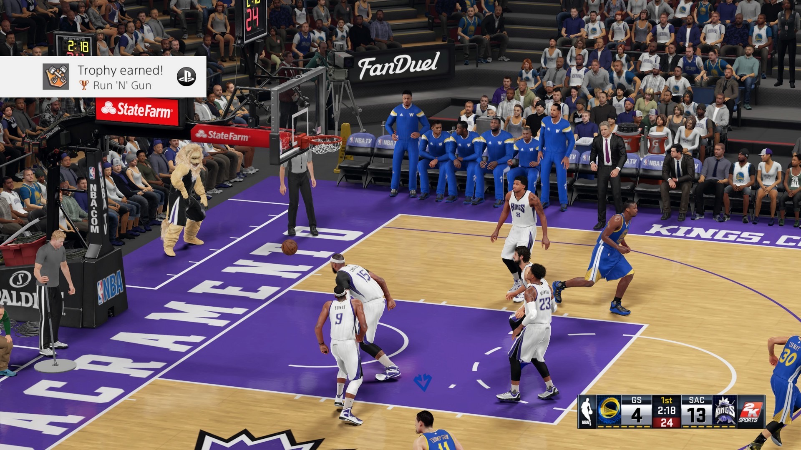

NBA 2K

What Is NBA 2K?
NBA 2K is a series of basketball video games that replicate the real NBA. Exactly like basketball the aim of the game is to be the team with the most points. The only difference from NBA the video game to the real thing is that it's a video game. All the basketball rules are the same. NBA 2K has allowed players to play as their favourite basketball players. NBA 2K is a series of games that come out once a year. The first NBA game was from 2015 and was NBA 2K15, and the latest game is NBA 2K22. Every new game there are new updates and new game modes in every game. Some game modes in NBA 2K21 is: My Career, Park, ProAm, AnteUp, BlackTop, MyTeam, PlayNow Online, MyGM
How much is NBA 2K?
NBA 2K22 is around $20, but it depends on where you buy it. The cost may be different.
Where can you play NBA 2K?
You can play NBA 2k22 on PlayStation, Xbox, Nintendo Switch. The game can be bought through each platform, or as a disc. You can get the discs from stores like Big W, Target, JB HI FI, and more.